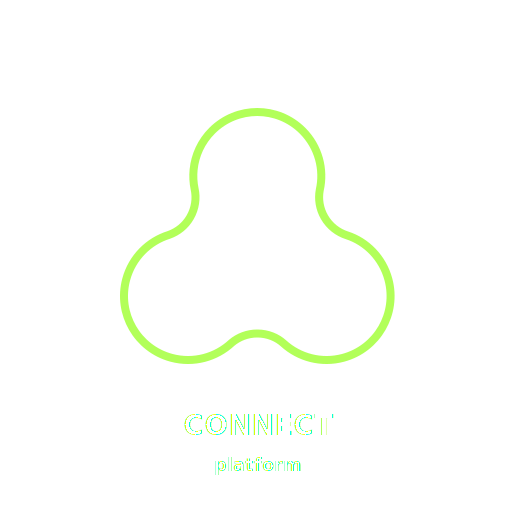

Connect Platform is a project with the goal is to make building api micro-services so easy and convinient that it can be done via some simple to use visual panel, far faster, safer and easier than before.
view on github